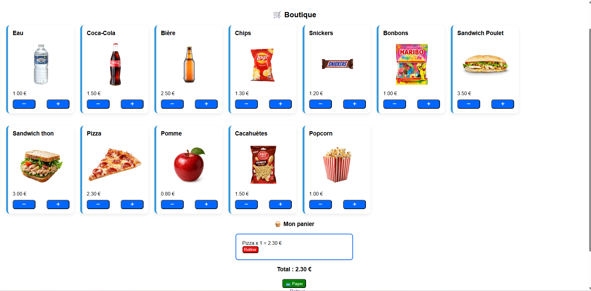

Web · PHP / SQL
Site de gestion de buvette
Création d’un site web permettant de gérer des commandes, des stocks et des recettes.

Description
Le projet combine une interface web et une base de données afin de gérer les informations nécessaires au fonctionnement d'une buvette.
J'ai travaillé sur les échanges entre l'application et la base de données ainsi que sur l'affichage des informations utiles.
Travail réalisé
- Création des pages web
- Connexion à la base de données
- Gestion des commandes
- Gestion des stocks
- Requêtes SQL
- Mise en forme avec HTML/CSS
Apprentissages critiques mobilisés
Ces apprentissages critiques sont ceux que je peux illustrer à travers ce projet. Ils sont également reliés aux autres projets dans la page Compétences.
Développement des fonctionnalités du site.
Création des pages permettant l’utilisation de l’application.
Lecture et modification des données avec SQL.
Organisation des données nécessaires au fonctionnement du site.
Preuve de progression
Je connaissais les bases du développement web et de SQL.
J'ai appris à relier une application web à une base de données et à organiser les fonctionnalités autour des données manipulées.
Mobiliser ces connaissances dans un projet concret, expliquer mes choix techniques et produire une solution fonctionnelle adaptée au problème posé.